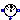
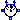
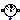
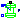
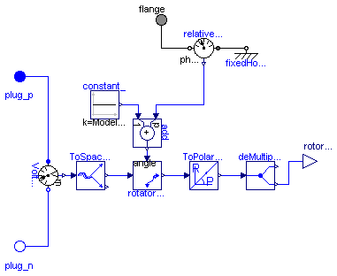

Modelica.Electrical.Machines.Sensors.MechanicalPowerSensor
Modelica.Electrical.Machines.Sensors.MechanicalPowerSensor
This package contains sensors that are usefull when modelling machines.
| Name | Description |
|---|---|
|  VoltageRMSsensor | |
| CurrentRMSsensor | |
|  ElectricalPowerSensor | |
|  MechanicalPowerSensor | |
|  RotorAngle | Rotor lagging angle |

Measured 3-phase instantaneous voltages are transformed to the corresponding space phasor;
output is length of the space phasor divided by sqrt(2), thus giving in sinusoidal stationary state RMS voltage.
| Type | Name | Description |
|---|---|---|
| output | V | |
| plug_p | ||
| plug_n |
model VoltageRMSsensor
constant Integer m(final min=1) = 3 "number of phases";
Modelica.Blocks.Interfaces.RealOutput V(redeclare type SignalType =
Modelica.SIunits.Voltage);
Modelica.Electrical.MultiPhase.Interfaces.PositivePlug plug_p(final m=m);
Modelica.Electrical.MultiPhase.Interfaces.NegativePlug plug_n(final m=m);
Modelica.Electrical.MultiPhase.Sensors.VoltageSensor VoltageSensor1(final m=m);
Modelica.Blocks.Math.Gain Gain1(final k=1/sqrt(2));
Machines.SpacePhasors.Blocks.ToSpacePhasor ToSpacePhasor1;
Machines.SpacePhasors.Blocks.ToPolar ToPolar1;
equation
connect(plug_p, VoltageSensor1.plug_p);
connect(VoltageSensor1.plug_n, plug_n);
connect(VoltageSensor1.v, ToSpacePhasor1.u);
connect(ToSpacePhasor1.y, ToPolar1.u);
connect(ToPolar1.y[1], Gain1.u);
connect(Gain1.y, V);
end VoltageRMSsensor;
Measured 3-phase instantaneous currents are transformed to the corresponding space phasor;
output is length of the space phasor divided by sqrt(2), thus giving in sinusoidal stationary state RMS current.
| Type | Name | Description |
|---|---|---|
| output | I | |
| plug_p | ||
| plug_n |
model CurrentRMSsensor
constant Integer m(final min=1) = 3 "number of phases";
Modelica.Blocks.Interfaces.RealOutput I(redeclare type SignalType =
Modelica.SIunits.Current);
Modelica.Electrical.MultiPhase.Interfaces.PositivePlug plug_p(final m=m);
Modelica.Electrical.MultiPhase.Interfaces.NegativePlug plug_n(final m=m);
Modelica.Electrical.MultiPhase.Sensors.CurrentSensor CurrentSensor1(final m=m);
Modelica.Blocks.Math.Gain Gain1(final k=1/sqrt(2));
Machines.SpacePhasors.Blocks.ToSpacePhasor ToSpacePhasor1;
Machines.SpacePhasors.Blocks.ToPolar ToPolar1;
equation
connect(plug_p, CurrentSensor1.plug_p);
connect(CurrentSensor1.plug_n, plug_n);
connect(CurrentSensor1.i, ToSpacePhasor1.u);
connect(ToSpacePhasor1.y, ToPolar1.u);
connect(ToPolar1.y[1], Gain1.u);
connect(Gain1.y,I);
end CurrentRMSsensor;
3-phase instantaneous voltages (plug_p - plug_nv) and currents (plug_p - plug_ni) are transformed to the corresponding space phasors,
which are used to calculate power quantities:
P = instantaneous power, thus giving in stationary state active power.
Q = giving in stationary state reactive power.
| Type | Name | Description |
|---|---|---|
| output | P | |
| output | Q | |
| plug_p | ||
| plug_ni | ||
| plug_nv |
model ElectricalPowerSensor
constant Integer m(final min=1) = 3 "number of phases";
Modelica.Blocks.Interfaces.RealOutput P(redeclare type SignalType =
Modelica.SIunits.Power);
Modelica.Blocks.Interfaces.RealOutput Q(redeclare type SignalType =
Modelica.SIunits.Power);
Modelica.Electrical.MultiPhase.Interfaces.PositivePlug plug_p(final m=m);
Modelica.Electrical.MultiPhase.Interfaces.NegativePlug plug_ni(final m=m);
Modelica.Electrical.MultiPhase.Interfaces.NegativePlug plug_nv(final m=m);
protected
Modelica.SIunits.Voltage v_[2];
Modelica.SIunits.Current i_[2];
equation
plug_p.pin.v = plug_ni.pin.v;
plug_p.pin.i + plug_ni.pin.i = zeros(m);
plug_nv.pin.i = zeros(m);
v_ = Machines.SpacePhasors.Functions.ToSpacePhasor(plug_p.pin.v - plug_nv.pin.v);
i_ = Machines.SpacePhasors.Functions.ToSpacePhasor(plug_p.pin.i);
2/3*P = +v_[1]*i_[1]+v_[2]*i_[2];
2/3*Q = -v_[1]*i_[2]+v_[2]*i_[1];
end ElectricalPowerSensor;
Modelica.Electrical.Machines.Sensors.MechanicalPowerSensorCalculates (mechanical) power from torque times angular speed.
| Type | Name | Description |
|---|---|---|
| flange_a | ||
| flange_b | ||
| output | P |
model MechanicalPowerSensor
extends Modelica.Mechanics.Rotational.Interfaces.TwoFlanges;
Modelica.Blocks.Interfaces.RealOutput P(redeclare type SignalType =
Modelica.SIunits.Power);
Modelica.Mechanics.Rotational.Sensors.TorqueSensor TorqueSensor1;
Modelica.Mechanics.Rotational.Sensors.SpeedSensor SpeedSensor1;
Modelica.Blocks.Math.Product Product1;
equation
connect(flange_a, TorqueSensor1.flange_a);
connect(TorqueSensor1.flange_b, flange_b);
connect(SpeedSensor1.flange_a, flange_a);
connect(SpeedSensor1.w, Product1.u2);
connect(TorqueSensor1.tau, Product1.u1);
connect(Product1.y, P);
end MechanicalPowerSensor;

Calculates rotor lagging angle by measuring the stator phase voltages, transforming them to the correspondig space phasor in stator-fixed coordinate system,
rotating the space phasor to the rotor-fixed coordinate system and calculating the angle of this space phasor.
The sensor's housing is implicitely fixed.
Since the machine's stator also implicitely fixed, the angle at the flange
is equal to the angle of the machine's rotor against the stator.
| Type | Name | Default | Description |
|---|---|---|---|
| p | number of pole pairs |
| Type | Name | Description |
|---|---|---|
| output | rotorAngle | |
| plug_p | ||
| plug_n | ||
| flange |
model RotorAngle "Rotor lagging angle"
constant Integer m=3 "number of phases";
parameter Integer p(min=1) "number of pole pairs";
Modelica.Blocks.Interfaces.RealOutput rotorAngle(redeclare type SignalType =
Modelica.SIunits.Angle);
Modelica.Electrical.MultiPhase.Interfaces.PositivePlug plug_p(final m=m);
Modelica.Electrical.MultiPhase.Interfaces.NegativePlug plug_n(final m=m);
Modelica.Electrical.MultiPhase.Sensors.VoltageSensor VoltageSensor1(final m=m);
Machines.SpacePhasors.Blocks.ToSpacePhasor ToSpacePhasorVS;
Modelica.Mechanics.Rotational.Interfaces.Flange_a flange;
Modelica.Mechanics.Rotational.Sensors.RelAngleSensor relativeAngleSensor;
Modelica.Blocks.Sources.Constant constant_(final k=Modelica.Constants.pi/2);
Modelica.Blocks.Math.Add add(final k2=1, final k1=p);
Machines.SpacePhasors.Blocks.Rotator rotatorVS2R;
Machines.SpacePhasors.Blocks.ToPolar ToPolarVSR;
Modelica.Blocks.Routing.DeMultiplex2 deMultiplex2(final n1=1,
final n2=1);
Modelica.Mechanics.Rotational.Fixed fixedHousing(final phi0=0);
equation
connect(constant_.y, add.u2);
connect(add.y, rotatorVS2R.angle);
connect(ToSpacePhasorVS.y, rotatorVS2R.u);
connect(rotatorVS2R.y, ToPolarVSR.u);
connect(ToPolarVSR.y, deMultiplex2.u);
connect(plug_p, VoltageSensor1.plug_p);
connect(plug_n, VoltageSensor1.plug_n);
connect(VoltageSensor1.v, ToSpacePhasorVS.u);
connect(deMultiplex2.y2[1], rotorAngle);
connect(relativeAngleSensor.phi_rel, add.u1);
connect(relativeAngleSensor.flange_b, flange);
connect(relativeAngleSensor.flange_a, fixedHousing.flange_b);
end RotorAngle;